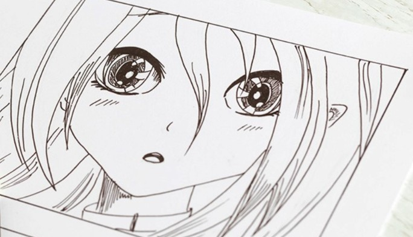
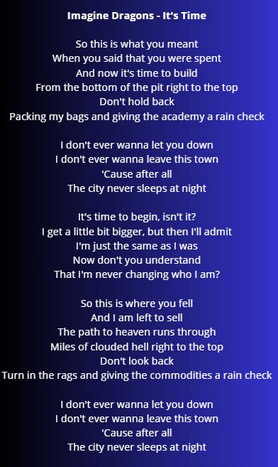
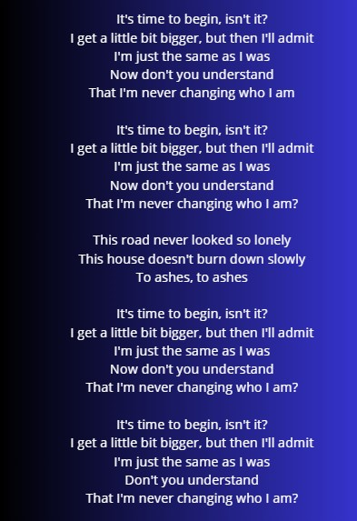
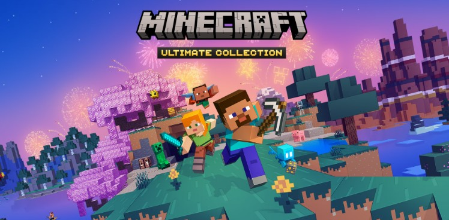
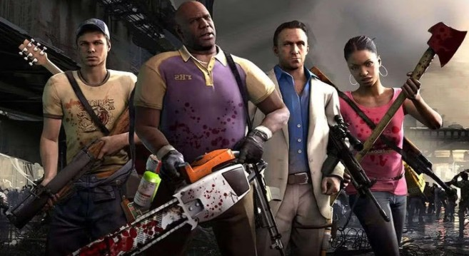
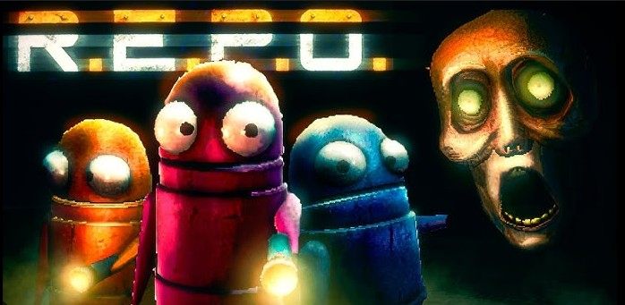

PRESENTACION PERSONAL AJDL
Datos Personales
Nombre: ALAN JHOHAN DEL RIO LOPEZ
Edad: 21 AÑOS
Carrera: Ingenieria de Sistemas
Semestre: 7mo Semestre

Datos Generales
Mis pasatiempos en general es que a mi me gusta dibujar, tengo un cuaderno donde dibujo:
- Personajes de peliculas animadas
- Mis propios personajes creados obviamente por mi
entre muchas otras cosas mas...
Me Gusta escribir historia o cuentos de fantasia, tambien tengo otro cuaderno aparte donde escribo:
- Historias de fantasia con mis personajes que yo he creado
- Ideas para otros proyectos (osea otras historias)
Me gusta Jugar algunos deportes, como por ejemplo, Futbol
aunque soy arquero me divierto jugando
hay veces en las que no es mi dia y mi equipo siempre pierde
Nos reimos cada vez que sucede algo gracioso a alguno de mis amigos
Lo malo es que termino todo adolorido al dia siguiente jejeje
Me gusta mirar la TV por mis series y animes favoritos, como por ejemplo:
- Animes fantasiosos de aventuras como Dragon Ball o Naruto
- Animes de Comedia Romantica como The Angel Next Door Spoils Me Rotten o Roshidere
- Series de Animacion como Un Show Mas, Hora de Aventura y otros...
Pasatiempos


Canción Favorita
|
  |
¿Por qué me gusta esta canción?
Elijo esta cancion, principalmente porque en un pasado no muy lejano fui una persona muy reservada, no me sentia comodo con nadie, porque pensaba que me harian mucho daño, tanto fisica como mentalmente, tenia miedo de hacer lo que mas queria por miedo al rechazo, asi que en ese entonces decidi ser alguien que no era para poder encajar con el resto de las personas y asi evitar los daños, pero fue un error, con esta cancion aprendi que uno debe ser uno mismo, ya que son esas diferencias lo que como personas a nosotros nos hace unicos, y automaticamente uno puede encajar en una sociedad con las personas correctas, con las personas que mas quieres, dicha cancion me enseño a valorarme a mi mismo y poder avanzar, asi logre abrirme mas hacia el entorno que me rodea, lo que en un princio me daba miedo hacer ahora lo hago con mas frecuencia, simplemente es una muy buena cancion.
Mi Videojuego Favorito
|
 |
Minecraft¿Por qué me gusta? Principalmente me gusta por su diverso o amplio mundo abierto donde podemos explotar nuestra creatividad, asi tambien poder demostra nuestras habilidades de supervivencia convatiendo monstruos y demas... Logros: Los logros que pude conseguir dentro del juego, a parte de los mas basicos, fue hacer una buena construccion con suficientes items para poder sobrevivir todas las noches e ir mejorando mis habilidades y defensas, eso en el modo supervivencia, mientra en el modo creativo, me dedicaba a hacer o construir estructuras grandes, recuerdo poder haber construido una gran mansion y un castillo. |
Left 4 Dead¿Por qué me gusta? El juego me gusta por su variedad de armas y infectados a los cuales aniquilar con las armas que encontremos en el camino, a su vez es entretenido jugar con amigos con los cuales pasar un buen rato, ya sea riendonos por la desgracia de uno por haber muerto o cosas mucho mas graciosas. Logros: Los logros que hasta ahora llevo del juego son 82 de 101 que el juego tiene, entre los mas destacados es pasarme las campañas en modo experto, asi tambien sobrevivir a una campaña solo con armas cuerpo a cuerpo, entre muchos otros mas. |
 |
|
 |
R.E.P.O¿Por qué me gusta? Me gusta el ambiente que tiene, aunque da un poco de miedo al principio, me acostumbre y con respecto a sus enemigos que hay en cada mapa si me sacan un poco de onda porque me matan al rato, y eso pasa porque tan bueno no soy para aniquilarlos. Logros: Mi logro mas grande por asi decirlo, ha sido superar por mi cuenta 3 niveles de los tantos que tiene el juego, ya de ahi sube su dificultad y no puedo avanzar, ahora el juego se puede jugar entre varios, asi que con ellos si pude llegar mas lejos, aunque es gracioso como gracias a mis muertes ellos andan perfudicados y se enojan o se rien de mis desgracias. |
Sobre mí
Misión: Actualmente soy estudiante de Ingenieria de sistemas en la Universidad Salesiana de Bolivia, y lo soy debido a que quize saber mas acerca de como funcionan los dispositivos, como es su arquitectura, etc. Tambien soy Tecnico Basico en Gastronomia y Alimentacion, tambien participe de cursos de Doblaje, Cinematografia y Diseño Grafico. Yo como persona siempre soy optimista, siempre veo lo bueno de las cosas o de las personas que estan a mi alrededor. Yo ahora tengo como proposito seguir con mis estudios y salir de la Universidad con mi titulo, asi tambien poder conocer a quien sera mi compañera de vida y poder formar una familia, pero eso ya dira el tiempo cuando me tocara vivir ese evento.
Visión: Mi vision es como dije anteriormente primero sera salir de la Universidad con mi titulo, pero despues que... Una vez saliendo podre dedicarme a lo que mas me gusta que es ser diseñador grafico, seguir creando contenido en mis redes sociales ya que por ahora estan paralizados, podre enfocarme mas en mi sueño que es ser alguien reconocido a nivel mundial en el mundo de la actuacion y en el doblaje, tal vez sera complicado pero no sera imposible, otra de la metas que tengo es poder viajar por el mundo.
Mis intereses
Tareas Destacadas
A lo largo de estos años que llevo aqui en la carrera me destaque mas en diseñar y crear una empresa fantasma el cual hasta le diseñe un logotipo, tambien en tema de programacion me destaque por uno de mis trabajos que era crear un videojuego que era un Flappy Bird, era sencillo pero me diverti creandolo, por ultimo tambien me destaque cuando demostre mi habilidad para poder expresarme en frente de todos gracias a lo que aprendi de Expresion Oral y Escrita.